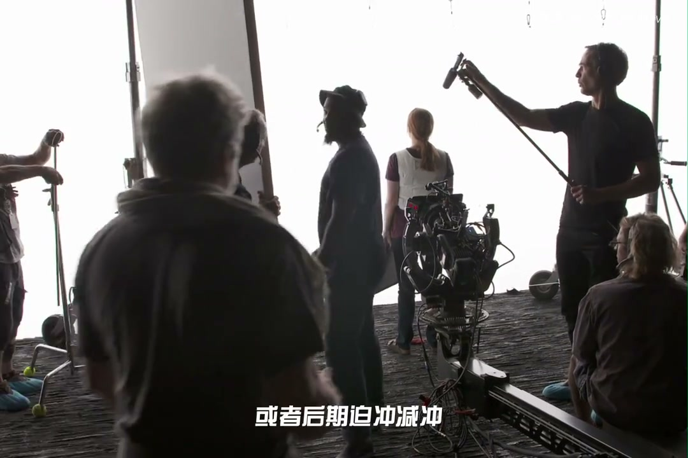
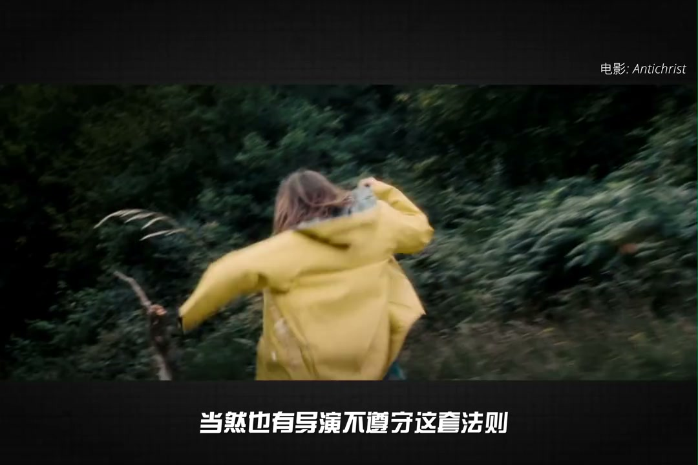
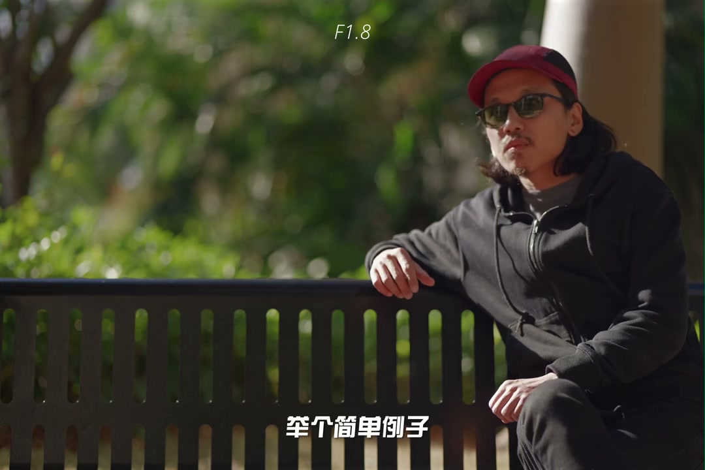
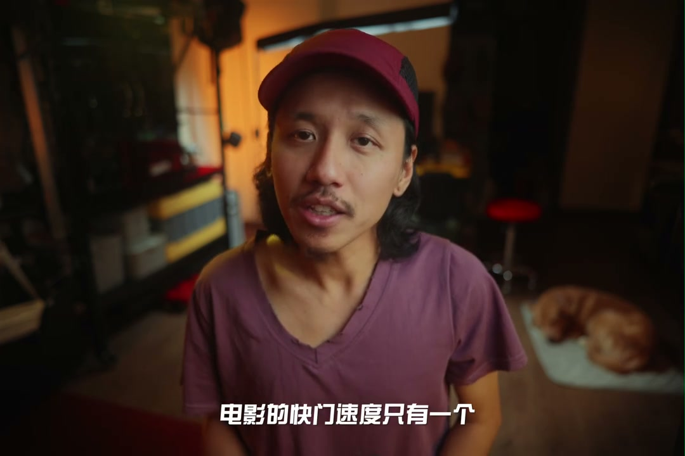
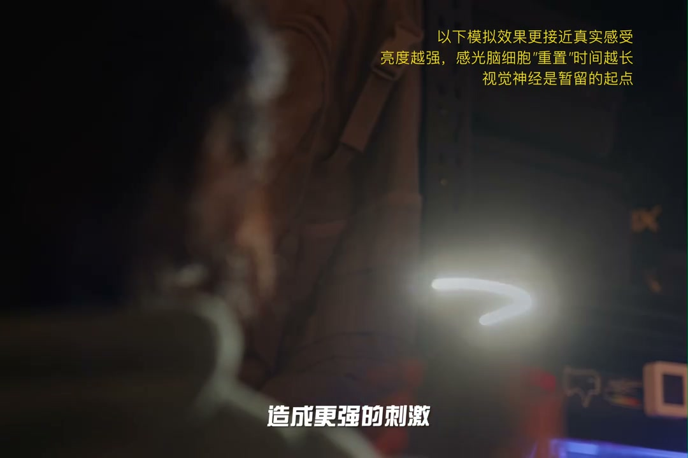

01
中文
在2026年，我们默认摄影师必须照片视频双修的年代，这道摄影圣经似乎开始悄悄过时。
EN
In 2026, when photographers must master both photo and video, this bible quietly becomes dated.
表达提示photo-video dual（照片视频双修）

Scene English · 摄影 · 曝光三要素
Why Don't You Use the Exposure Triangle for Video?
🎧 语音讲解
Opening: why have aperture, shutter, and I…
情境视频时代让曝光三要素过时。
在2026年，我们默认摄影师必须照片视频双修的年代，这道摄影圣经似乎开始悄悄过时。
In 2026, when photographers must master both photo and video, this bible quietly becomes dated.
表达提示photo-video dual（照片视频双修）
今天我们来聊聊为何拍视频不用曝光三要素。
Today: why not use the exposure triangle for video.
表达提示why not in video（为何视频不用）
photo-video dual（照片视频双修
why not in video（为何视频不用

Why ISO is fixed: modern cameras offer a d…
情境胶片换卷代价大，ISO锁定800。
现代相机里有一二十个ISO档位让我们随时调用，但电影工业里感光度只有一个，ISO800。
Modern cameras offer many ISO settings, but film uses only one: ISO 800.
表达提示only ISO 800（只有ISO800）
胶片是无法回看的，随意更换胶卷会打乱拍摄的进度表。
Film can't be reviewed; swapping rolls breaks the schedule.
表达提示can't be reviewed（无法回看）
任何一个现在我们看似翻江倒海的动作，都远比以前换一盘胶卷保险的多。
Any extreme action now was far safer than swapping a roll back then.
表达提示safer than before（更保险）
only ISO 800（只有ISO800
can't be reviewed（无法回看

Native ISO: in the film era, ASA and color…
情境原生感光度之外都是数字增益。
胶卷的ASA和色温都被视作艺术表现工具，而不是曝光工具。
Film ASA and color temp were artistic tools, not exposure tools.
表达提示artistic tool（艺术工具）
除了原生感光度，其他的感光度是模拟出来的，也称数字增益。
Other than native ISO, every setting is simulated—digital gain.
表达提示digital gain（数字增益）
artistic tool（艺术工具
digital gain（数字增益

The 800 gold standard and trends: to get t…
情境ISO800是黄金标准，双原生是未来。
ARRI摄影机的原生ISO就是800，被誉为黄金标准。
ARRI's native ISO is 800—the gold standard.
表达提示gold standard（黄金标准）
当然也有导演不遵守这套法则，故意提高感光度去获得高噪点的画面。
Some directors raise ISO deliberately for grainy looks.
表达提示break the rule（打破法则）
当下最火热的技术方向是双原生甚至三原生ISO。
The hottest direction is dual-native or even triple-native ISO.
表达提示dual-native ISO（双原生ISO）
gold standard（黄金标准
break the rule（打破法则

Why aperture is fixed: you've probably bee…
情境光圈调曝光忽略了景深代价。
电影是一门蓄势的艺术，而不是技术的艺术。
Film is an art of restraint, not an art of technique.
表达提示art of restraint（蓄势的艺术）
调节光圈往往忽略了很重要的代价，那就是景深。
Adjusting aperture ignores a big cost: depth of field.
表达提示the cost is DOF（代价是景深）
提高景深，就可以给两个人物更多的表演区域。
Deepening DOF gives both actors more room to perform.
表达提示more acting room（更多表演区）
art of restraint（蓄势的艺术
the cost is DOF（代价是景深

Focus pulling and artistic restraint: film…
情境浅景深是跟焦员噩梦，电影靠景深叙事。
电影拍摄从来不会用自动对焦，跟焦都是活人手动完成。
Film never uses autofocus; focusing is done by hand.
表达提示hand focus（手动跟焦）
电影拍摄光圈开到T2.8已经被视为是非常大的光圈。
Opening to T2.8 is already a very large aperture in film.
表达提示T2.8 is big（T2.8已很大）
电影依赖景深来展示剧情线索，前景和背景其实都是展示剧情的重要位置。
Film uses DOF for story cues—foreground and background both matter.
表达提示front and back（前后景）
hand focus（手动跟焦
T2.8 is big（T2.8已很大

Citizen Kane and full integration: the dir…
情境光圈是全片设计的一环，现场只微调。
经典作品《公民凯恩》利用了超景深的摄影手法，开拓出巨大的表演区域。
Citizen Kane used deep focus to open up a huge acting area.
表达提示deep focus（超景深）
光圈在电影拍摄中不只是技术工具，而是艺术蓄势工具。
In film, aperture is an artistic tool, not just technical.
表达提示artistic tool（艺术工具）
光圈定好了，画面太暗加灯光，画面太亮加ND。
With the aperture set: dark means more light, bright means ND.
表达提示light or ND（加灯或ND）
deep focus（超景深
artistic tool（艺术工具

Why the shutter is fixed: for artistic rea…
情境180度原则让快门固定，为电影感。
简单的回答就是180度原则，为了电影感。
The simple answer is the 180-degree rule, for the cinematic feel.
表达提示180-degree rule（180度原则）
但一旦到了拍视频，调节快门可是犯了大忌。
But in video, touching the shutter is a big taboo.
表达提示big taboo（犯大忌）
电影的快门速度只有一个，那就是48分之1秒。
Film has only one shutter speed: 1/48s.
表达提示one shutter speed（唯一快门）
人眼的帧率也是动态的，完全取决于你的注意力和生命机能。
The eye's frame rate is dynamic—it depends on attention and biological function.
表达提示dynamic attention（动态注意）
180-degree rule（180度原则
big taboo（犯大忌

Motion blur and the experiment: light land…
情境视觉暂留是动态模糊的原理。
感光细胞产生的化学信号不会瞬间消失，大概会持续10分之1到15分之1秒。
Photoreceptor signals persist about 1/10 to 1/15 of a second.
表达提示persist briefly（短暂持续）
大脑会合成这段时间内光所发生的所有变化成为一段快照，被称之为视觉暂留。
The brain composites all changes into one snapshot—persistence of vision.
表达提示persistence of vision（视觉暂留）
手电筒的光造成更强的刺激，感光细胞需要更长时间恢复敏感度。
Stronger light means photoreceptors take longer to recover sensitivity.
表达提示stronger stimulus（更强刺激）
persist briefly（短暂持续
stronger stimulus（更强刺激

24fps and the 180-degree shutter: back to …
情境24帧是声音时代标准，180度造就自然模糊。
设定一个兼容声音画面并且稳定播放的标准帧率，成为了不得不解决的问题。
A rate compatible with sound and picture became a must-solve problem.
表达提示sound and picture（声画兼容）
如果播放的画面过于清晰，人眼能开始觉察到眼前播放的是一张张单独的图片。
Too-sharp frames reveal themselves as individual pictures.
表达提示too sharp（过于清晰）
180度的镂空角度形成这种自然的动态模糊，我们依旧沿用当年的快门角度原则。
The 180-degree opening yields natural motion blur—we still follow the rule.
表达提示shutter angle rule（快门角度原则）
sound and picture（声画兼容
too sharp（过于清晰

The rule can be broken: of course, the 180…
情境180度可打破，是工业遗产的视觉烙印。
电影人通过提高快门速度，模拟战争现场感。
Filmmakers raise the shutter to simulate the battlefield feel.
表达提示battlefield feel（战争现场感）
这个原则是工业历史的遗产，而电影标准被沿用了100多年。
It's an industrial legacy used for over a hundred years.
表达提示industrial legacy（工业遗产）
已经在人类文明基因中形成视觉烙印，我们本能认为这就是电影感。
A visual imprint in the culture—we instinctively feel this is cinema.
表达提示visual imprint（视觉烙印）
battlefield feel（战争现场感
industrial legacy（工业遗产
说视频时代变化
说ISO固定800
说光圈代价
说跟焦艺术
说180度快门
电影里三要素不可乱调。
换卷不如调光。
大光圈牺牲景深。
跟焦员不可替代。
视频调快门犯大忌。